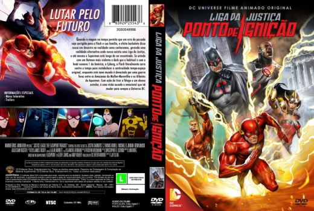

Outro Título:Justice League: The Flashpoint Paradox
País:United States, 81 minutos
Idiomas falados:Inglês, Português
Gênero(s):Animação, Sci-Fi, Ação, Aventura, Fantasia
Diretor(s):Jay Oliva
Escritor(es):Jim Krieg
Codec:MPEG-2 (DVD)
Número: 5793


Certificado:
Sinopse:
Barry Allen, o herói Flash, nunca conseguiu esquecer o dia em que sua mãe foi vítima de um horrendo crime e faleceu. Determinado a mudar a sua história, ele quebra as barreiras do tempo com sua hipervelocidade e volta no tempo, para impedir que a tragédia aconteça. No entanto, mexer com a linha temporal traz sérias consequências para o presente. Por conta da sua volta, o mundo é devastado por uma grande guerra entre as amazonas da Mulher-Maravilha e o exército de Atlantis, liderados por Aquaman. Junto com o Batman dessa nova realidade, mais violento e destemido, e a ajuda do Cyborg, ele tenta restaurar o fluxo temporal e impedir que esse mundo alternativo se concretize.
Elenco:


Tipo de mídia: DVD5,
Legendas: Inglês, Português, Sem Legendas
Alugado: Não
Tela: Anamorphic Widescreen